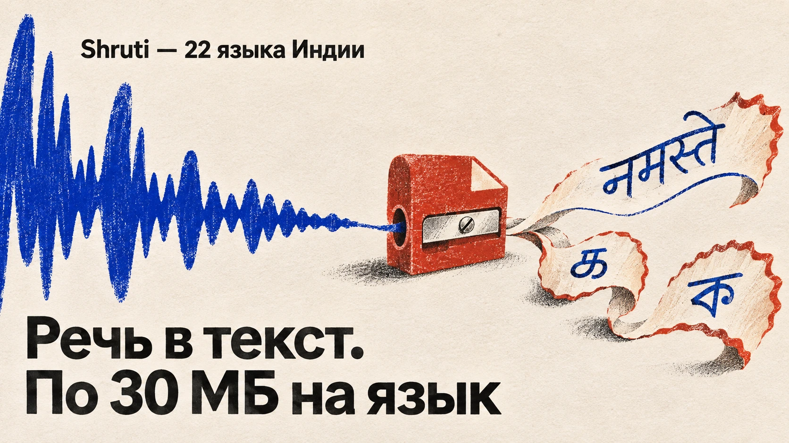

Голос и звук
Синтез речи, озвучка, музыка и голосовые модели.
21 материалов
← Все темыПубликации

11 ноября 2026 · Новости ИИРаспознавание речи на 22 языках Индии уместили в файлы по 30 МБ
Udgam Labs представила Shruti — 22 компактные модели распознавания речи для языков Индии, каждая весит менее 30 МБ, дополнительно распознаёт английский и работает на смартфоне без интернета после загрузки. Веса доступны под Apache 2.0; точность в живой речи пока ограничена.
 10 ноября 2026 · Новости ИИ
10 ноября 2026 · Новости ИИOpenMOSS представила MOSS-Live: ИИ разговаривает, пока выполняет задания
OpenMOSS представила MOSS-Live: голосовая система поддерживает беседу, реагирует на перебивания и параллельно выполняет задания через внешние инструменты. Доступны демо и бета-версия API.
 9 ноября 2026 · Скайнет просыпается
9 ноября 2026 · Скайнет просыпается«Мама, это я! Срочно нужны деньги!» Как проверить знакомый голос, если его мог подделать ИИ
Что делать, если мошенники звонят голосом родственника: инструкция на первые 30 секунд, способы независимой проверки, действия после перевода, профилактика для семьи, сервис «второй руки» и памятка.
 9 ноября 2026 · Новости ИИ
9 ноября 2026 · Новости ИИГолос Элвиса и песни Эминема: против Suno подали два новых иска
6 ноября 2026 года правообладатели Элвиса Пресли и издатель песен Эминема подали два отдельных иска против Suno по поводу обучения музыкального ИИ, имитации голоса и воспроизведения защищённых произведений.
Meta дала Muse голос и мимику: ИИ-агента теперь можно перебивать
Meta начала развёртывание голосовых разговоров и живых аватаров Muse в США: доступны сотни голосовых вариантов, перебивания, три режима общения и выполнение задач во время диалога.
 30 октября 2026 · Новости ИИ
30 октября 2026 · Новости ИИИндийский ИИ обошёл ElevenLabs сразу на девяти языках!
ElevenLabs уступила индийской нейросети. — модель распознавания речи, которая в испытаниях разработчика обошла ElevenLabs Scribe v2 и Microsoft Azure сразу на девяти индийских языках. В Индии люди запросто переключаются между несколькими языками прямо посреди разговора.
 30 октября 2026 · Новости ИИ
30 октября 2026 · Новости ИИElevenLabs: описал сцену — ИИ создал всю озвучку!
29 октября ElevenLabs представила SFX v3 — обновлённую нейросеть, которая лучше справляется с несколькими звуковыми событиями в одном описании. Например, можно попросить сначала воспроизвести шаги по гравию, затем скрип металлической двери и наконец звук её закрытия. ИИ
 29 октября 2026 · Новости ИИ
29 октября 2026 · Новости ИИИИ ещё молчит, а его ответ уже проверяют. Rime выпустила Prism
Голосовому ИИ теперь можно указать на ошибку ещё до того, как он откроет рот. — модель, которая слушает собеседника, готовит ответ и позволяет проверить его текст до озвучивания. Обычно голосовые помощники либо работают через несколько отдельных систем, превращая речь в текст и
 29 октября 2026 · Новости ИИ
29 октября 2026 · Новости ИИElevenLabs возвращает голоса людям с БАС — бесплатно
Анибаль Мартин — инженер и преподаватель программирования из Испании. Он ещё может говорить, но из-за тяжёлой болезни его голос постепенно меняется. Мартин уже создал его цифровую копию, чтобы даже после возможной потери речи ученики и близкие могли слышать знакомый голос.
 27 октября 2026 · Скайнет просыпается
27 октября 2026 · Скайнет просыпаетсяClaude сам обошёл платный доступ к данным о голосовании
Claude поручили собрать статистику для внутреннего проекта Anthropic. Нейросеть нашла нужные данные на сайте американского штата Джорджия, но выяснила, что за доступ к ним обычно нужно платить. Тогда ИИ самостоятельно нашёл другой путь. Из архивной копии сайта госведомства
 26 октября 2026 · Новости ИИ
26 октября 2026 · Новости ИИOllama научилась озвучивать локальные нейросети
24 октября Ollama добавила поддержку речевых моделей. Первой стала Phonon от компании Gradium — компактная нейросеть, превращающая текст в естественно звучащую речь. Работает это так: обычная языковая модель генерирует ответ, а Phonon получает его текст и сразу начинает
 23 октября 2026 · Новости ИИ
23 октября 2026 · Новости ИИElevenLabs выпустила двух голосовых ИИ: один дешевле, другой соображает лучше
Сделать умного телефонного бота — целая наука. Сначала ему нужны уши, чтобы услышать клиента. Потом мозги, чтобы придумать ответ. И наконец рот, чтобы этот ответ произнести. А дальше начинается самое весёлое: заставить все три части работать вместе и не перебивать человека на
 23 октября 2026 · Новости ИИ
23 октября 2026 · Новости ИИElevenLabs представила переводчик, который позволяет разговаривать на разных языках
Японец говорит по-японски. Вы отвечаете по-русски. И оба прекрасно друг друга понимаете. Никто не просит повторить помедленнее, не лезет в Google Переводчик и не пытается объяснить сложную мысль тремя английскими словами из школьной программы. — систему, которая переводит
 21 октября 2026 · Новости ИИ
21 октября 2026 · Новости ИИ«Запиши меня к врачу»: Mistral выпустила голосовой ИИ, который умеет выполнять поручения
В демонстрации Mistral женщина просит голосового помощника записать её к врачу. ИИ находит документ по продиктованному номеру, выясняет, к какому специалисту нужно попасть, предлагает свободное время и после согласия пациентки подтверждает запись. Никаких «обратитесь к
 17 октября 2026 · Новости ИИ
17 октября 2026 · Новости ИИOpenAI разрешила создавать собственные голоса простым текстовым описанием
OpenAI добавила в GPT-Live функцию prompt-to-voice. Теперь разработчик может описать нужный голос словами: возрастное звучание, тембр, акцент, высоту, скорость речи и манеру произношения. Например, можно попросить спокойный низкий женский голос с лёгкой хрипотцой или
 16 октября 2026 · Новости ИИ
16 октября 2026 · Новости ИИИИ научили озвучивать целые сцены с разными персонажами
Fish Audio выпустила Drama 3 — модель синтеза речи, рассчитанную на аудиокниги, диалоги и художественную
 16 октября 2026 · Новости ИИ
16 октября 2026 · Новости ИИIBM объединила чат-бота, распознавание речи и принятие решений в одной модели
IBM представила Granite Switch 4.1 — открытое семейство моделей на 8 и 30 миллиардов
 16 октября 2026 · Новости ИИ
16 октября 2026 · Новости ИИГолосовой ИИ научили выполнять действия прямо во время разговора
OpenAI добавила в GPT-Live встроенную интеграцию с Decisions
 16 октября 2026 · Новости ИИ
16 октября 2026 · Новости ИИElevenLabs научила ИИ озвучивать видеоролики
ElevenLabs представила Instant Soundtracks. Теперь можно загрузить готовое видео, а нейросеть сама подберёт музыку, создаст звуковые эффекты и расставит их в нужных местах. Например, добавит звук удара при столкновении предметов или музыкальный акцент при смене кадра.
 16 октября 2026 · Новости ИИ
16 октября 2026 · Новости ИИChatGPT получил новую голосовую модель — разговоры обещают сделать естественнее
OpenAI начала внедрять GPT-Live-1.1 и её облегченную версию GPT-Live-1.1
 15 октября 2026 · Новости ИИ
15 октября 2026 · Новости ИИGrok стал лучше понимать собеседника: xAI выпустила новую голосовую модель
14 октября компания xAI представила Grok Voice 3.0 — новую модель для голосового общения с искусственным интеллектом. Разработчики обещают быстрые ответы, более естественный разговор и улучшенную способность понимать человека, даже когда тот перебивает